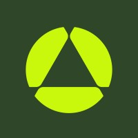

.jpeg)
Technical Consultant - Odys Aviation
Skills: Python, Sklearn, Numpy, Pandas, Linear algbrea, Data Analytics, Business Analytics, EDA, Data collection, data cleaning, data classifcation
.png)
Odys Aviation is a VTOL company that is focusing on saving people time, by creating a vehicles that is more accessible to people of all backgrounds, that is as cheap as driving from point A to B, and isn't harmful to the enviorment. VTOL's are basically drones that transport people (aka flying cars), and this was a dream-come-true project for me. I was mainly working on the Technical side of things, by creating a created analysis to find the Market Size at certain airports for airline companies to see how much value can be added if they invested in VTOL aircrafts. Using Python, Pandas, Numpy, sklearn, and various data analytics skills, we found the TAM, SAM, SOM, and to create a data pipeline for future usage. We were responsible for collecting data, cleaning the data, and EDA (exploratory data analysis) before bring on 2 more engineers to help build the models.
Marketing Strategy Consultant - ZyenaLabs
Skills: Marketing Strategy, B2B Marketing, Design, Communication, Collaboration, Market Sizing, Market analysis, Competitive analysis
ZyenaLabs is a company that has successfully had a initial coin offering (ICO) and is currently looking for ways to help companies train their employees in the most efficetive manner, in AR and VR technologies. Zyenalabs is a Web3 company utilizing all the new technologies Web3 has to offer in their products. This project was focused on B2B marketing/strategy project and involved creating a Pitch Deck for VC investors. I was one of the few consultants put on multiple teams due to my strong problem solving ablities
iOS Software Developer Intern - Amotions
Skills:Swift, SwiftUI, UIKit, Google Anayltics, A/B testing, Business Analytics, Data analytics, APIs, Fireabse, Product development

At Amotions, I was the first iOS intern, which gave me a lot of room to grow within the company. During the first 8 weeks of my internship, I created 13 view controllers for the iOS app ensuring efficiency within the design process, creating new features using Swift/Xcode/Cocoa Touch/Lottie/XCTests (Unit Testing) to create front-end designs, a backend with Firebase, and REST APIs. I ended up developing a Data pipeline, and features that would help users develop emotional intelligences and communication skills!
Product Management Internship - Advantmed
Skills: Product development, SQL, Power BI, VBA, Excel, Business Analytics, Data visualizations
At Advantmed, I had the oppurtunity to create features for the company's internal time-clock tool used to track employee inputs. I worked to identify core problems within the software and came up with solutions to solve those problems. I took these solutions from ideation, through the product funnel at Advantmed (Approach Document, business requirement Document, product approach document, and Aha/Jira). In addition, using Excel and Power BI, I was able to show the need for the ideated solutions and develop all encompassing dashboards of internal productivity using time-clock data.
Cofounder/Chief Technology Officer - Hideouts
Skills: SwiftUI, Firebase, Node.js, App Store Delivery Process, Beta Testing, Leadership
I worked to developed an MVP in only 9 weeks and helped earn Seed Funding (100k for 10% equity). In addition, I spearheaded a team of 6 IOS developers inorder to work towards a final product. Some of the tools I worked with includes Swift's Core Data, Media Player, as well as Firebase to create an Auth system, message sending (image, audio, and video sending) using Firebase, and various features more unique to the app. Finally, I delivered the MVP to the App Store and participated in the management of product testing and feedback.
Information Technology Administrative Assistant - Pacific Wire and Cable
Skills: WordPress, Python automation, Opperating System Management, Server Maintenance

At Pacific Wire and Cable, I created a server to ensure digital security and increase internet speeds by over 150%. In addition, I worked with organizational softwares to ensure timely delivery of products and utlized Python automation to increase efficiency within the business.
FireNotice - Created a fire notification app using
Skills: API, Firebase, Swift, Apple maps libary

While living in Califronia, I have experience a number of very very close encounters with forest fires, however so has many of my friends and family members. In order to combat this issue, I created an app that would notiify people if they, or their loved ones where in the path of a forest fire. In addition, this app allows users to put in key places (your kid's school, grandparent's houses, etc.) that you want to ensure are safe durring fire seasons. Creating this app exercised my technical skills however it went farther to develop my user-centered mindset/empathy when programming.
Gitlet - Created a terminal version control system
Skills: Java

Using Java, I created an version control system simlar to Github called Gitlet. Some of the key features replicating github including:
- add
- commit
- log
- merge
- status
- branch
- checkout (3 different version!)
Created a game of chance
Skills: Swift, UIKit, Firebase

I created a game that would test my ablity to be completely and blindly lucky. I created this game in order to test my ablities using Firebase by creating a leaderboard for all the players who played the game. Users who reached to top 100 player would be prompted to created a 3 letter name for the submition, simlar to an arcade game.
Ataxx - a strategy board game with an AI
Skills: Java, GUI

I created a program of the famous game, Ataxx. This program had a working GUI and a working "AI" player that used Alpha-Beta pruning to get the best results.
CryptoTracker - a cyrpto currency price display
Skills: Swift, API

I created a basic cyrpto currency price display using the CoinAPI. As someone who is very intrested in the newest in Web3 technologies, this project was very fun! I hope to start working on more projects involving Smart Contracts, and blockchain technologies.
Weather Time - a website that shows the tempreture and weather
Skills: HTML/CSS/JS, API

I created a website a website that takes your current location and displays you the tempreture and weather of your local area. This website was a way for me to get more involved in JS development, buliding off of previous HTML and CSS experience using the Weather API.